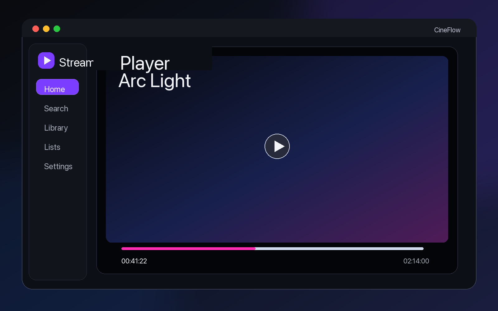

Native macOS app
SwiftUI interface designed for desktop-first browsing and playback.
macOS 13+ - Apple Silicon - Local-first
A native macOS streaming media client with a cinematic Netflix-like interface.
Search, organize and watch your media in one elegant Apple Silicon app.

Product Preview





Features
SwiftUI interface designed for desktop-first browsing and playback.
Targeted at M1 or newer Macs with macOS 13.0+.
Graphite surfaces, cinematic shelves, soft glow and quiet controls.
Designed to stream without manual full-file downloads.
Playback layer prepared around an embedded libmpv engine.
Movies and series get metadata, posters, ratings and context.
Resume later from local watch history and progress.
Keep saved movies, series, favorites, ratings and lists on this Mac.
Create watchlists and personal collections without cloud sync.
Embedded, local and OpenSubtitles-ready subtitle workflows.
No telemetry by default; credentials are stored in Keychain.
Sparkle 2 appcast updates connected to GitHub Releases.
How It Works
Find a movie or series with metadata and release context.
Compare quality, seeders, size and source before playback.
Start watching through the embedded playback architecture.
Return from Continue Watching, Library or personal lists.
System Requirements
Download
The first public `.dmg` will be distributed through GitHub Releases.
Download for macOSChecksum: available with signed release assets.
Installation
CineFlow.app to Applications until the bundle is renamed in a future task.Privacy
Legal Note
Roadmap
Apple Silicon app, local library, playback, subtitles and updates.
Source provider extension model after the first release stabilizes.
Optional account and sync layer after local-first workflows are solid.
Additional subtitle and source providers over time.